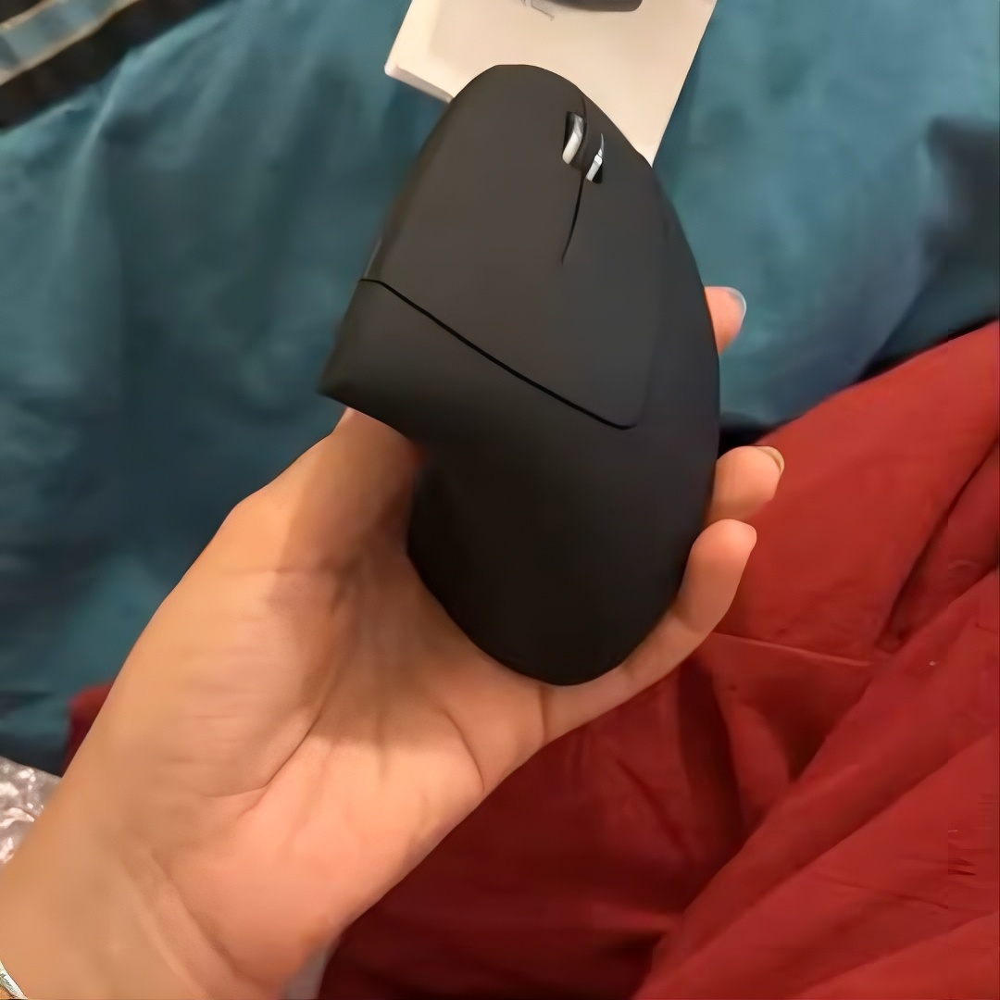
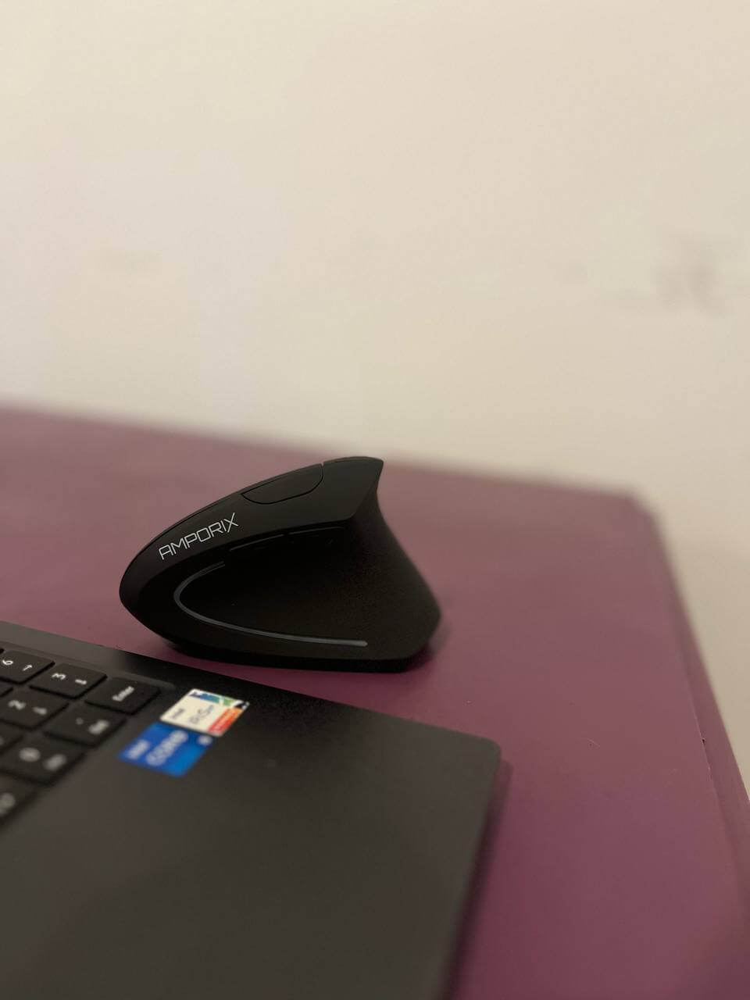
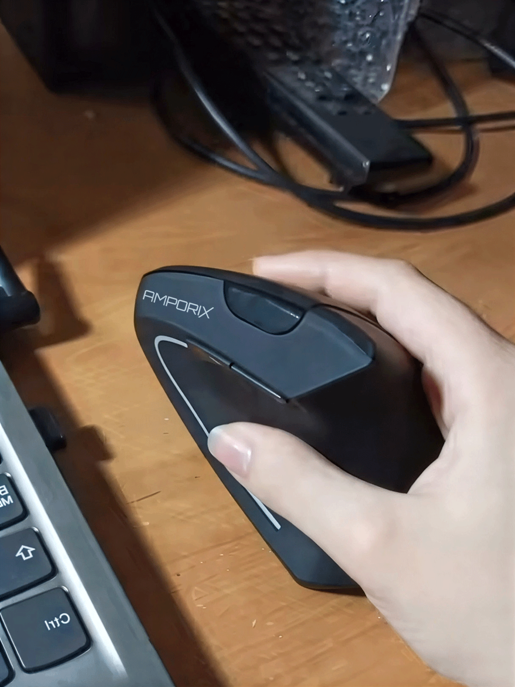

Expert en Ergonomie
Une souris verticale ergonomique qui prend soin de votre santé
Dites adieu aux douleurs de poignet et aux tensions musculaires
Ergonomics Expert
A vertical ergonomic mouse that takes care of your health
Say goodbye to wrist pain and muscle tension
Ce qui commence comme une simple gêne peut rapidement se transformer en syndrome du canal carpien, nécessitant une intervention chirurgicale et des mois de rééducation.
Une pression constante dans votre poignet qui empire jour après jour
Des douleurs de plus en plus intenses qui vous empêchent de travailler
Pire la nuit après une longue journée, vous empêchant de dormir
Une opération chirurgicale devient la seule solution possible
Entre 5 000€ et 10 000€ en frais médicaux
Sans compter l'arrêt de travail, la perte de productivité
et les mois de rééducation douloureuse
What starts as a simple discomfort can quickly turn into carpal tunnel syndrome, requiring surgical intervention and months of rehabilitation.
Constant pressure in your wrist that gets worse day after day
Increasingly intense pain that prevents you from working
Worse at night after a long day, preventing you from sleeping
Surgery becomes the only possible solution
Between $5,000 and $10,000 in medical expenses
Not to mention time off work, lost productivity
and months of painful rehabilitation
Passe par un tunnel étroit dans votre poignet. Une souris classique comprime ce nerf pendant des heures chaque jour.
S'enflamment à cause de la torsion non naturelle du poignet, créant une tendinite douloureuse.
Forcer votre main à rester à plat exerce une tension constante sur tous les muscles de l'avant-bras.
Passes through a narrow tunnel in your wrist. A regular mouse compresses this nerve for hours every day.
Become inflamed due to the unnatural twisting of the wrist, creating painful tendinitis.
Forcing your hand to stay flat puts constant tension on all the muscles in your forearm.
Position non naturelle
Position naturelle
Unnatural position
Natural position
des utilisateurs de souris verticales constatent une réduction significative de leurs douleurs en moins de 2 semaines
Source: Étude ergonomique menée par l'Institut de Santé au Travail, 2023
Sur un échantillon de 1 247 utilisateurs
of vertical mouse users notice a significant reduction in their pain in less than 2 weeks
Source: Ergonomic study conducted by the Occupational Health Institute, 2023
Sample of 1,247 users
Même si vous avez déjà des douleurs,
passer à une souris ergonomique peut
stopper la progression des symptômes
et permettre à votre corps de guérir naturellement
Even if you already have pain,
switching to an ergonomic mouse can
stop the progression of symptoms
and allow your body to heal naturally
Notre souris ergonomique a été développée en collaboration avec des ergonomes, des kinésithérapeutes et des professionnels de santé pour offrir la position la plus naturelle possible à votre main.
• Angle de 57° - Position optimale validée par des études cliniques
• Repose-pouce - Soulage la pression sur le nerf médian
• Surface texturée - Adhérence parfaite sans effort
• 6 boutons programmables - Productivité maximale
• DPI ajustable - Précision pour tous vos besoins
Mais une solution préventive intelligente qui protège votre santé pendant que vous travaillez.
Our ergonomic mouse was developed in collaboration with ergonomists, physiotherapists and health professionals to offer the most natural position possible for your hand.
• 57° angle - Optimal position validated by clinical studies
• Thumb rest - Relieves pressure on the median nerve
• Textured surface - Perfect grip without effort
• 6 programmable buttons - Maximum productivity
• Adjustable DPI - Precision for all your needs
But an intelligent preventive solution that protects your health while you work.

"Je l'ai acheté pour ma fille, qui fait beaucoup de montage vidéo et utilise beaucoup la souris. Elle m'a dit que sa main se fatiguait rapidement. Cette souris maintient sa main dans une position très naturelle et prévient les tensions au poignet. Une excellente invention à un prix abordable."

"Fonctionne parfaitement. Je l'ai acheté car je trouve son design élégant, mais il est aussi extrêmement confortable pour travailler au bureau. Je l'adore !"

"Très satisfait de cet achat. Cette souris ergonomique soulage vraiment les douleurs au bras."
"I bought it for my daughter, who does a lot of video editing and uses the mouse a lot. She told me her hand was getting tired quickly. This mouse keeps her hand in a very natural position and prevents wrist tension. An excellent invention at an affordable price."
"Works perfectly. I bought it because I found its design elegant, but it's also extremely comfortable when working in the office. I love it!"
"Very satisfied with this purchase. This ergonomic mouse really relieves arm pain."
Investissez dans votre bien-être pour moins que le coût d'une consultation médicale
Invest in your well-being for less than the cost of a medical consultation